dover

The road into Dover through the windscreen: direction signs, a footbridge, average-speed signs, chevrons at a roundabout, the sea beyond, a flyover, traffic lights.
distance travelled


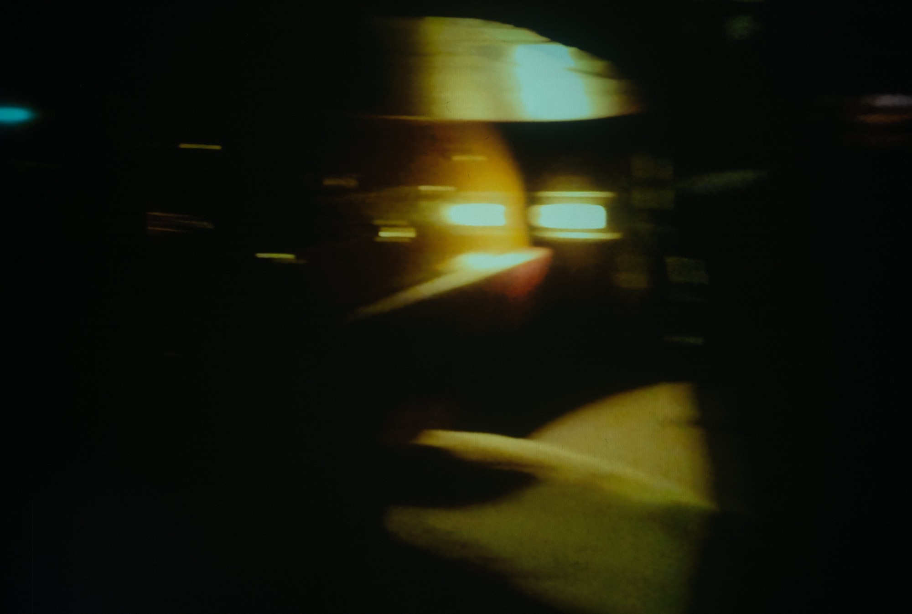
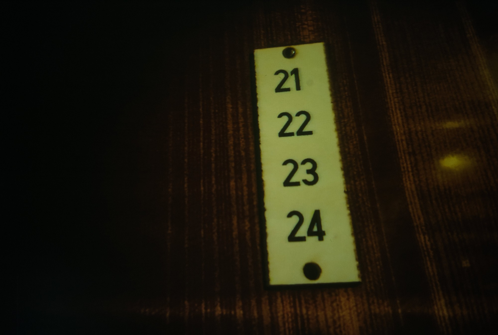
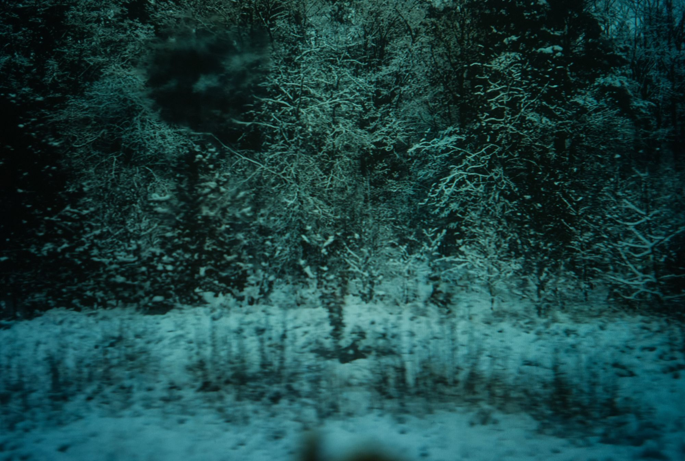
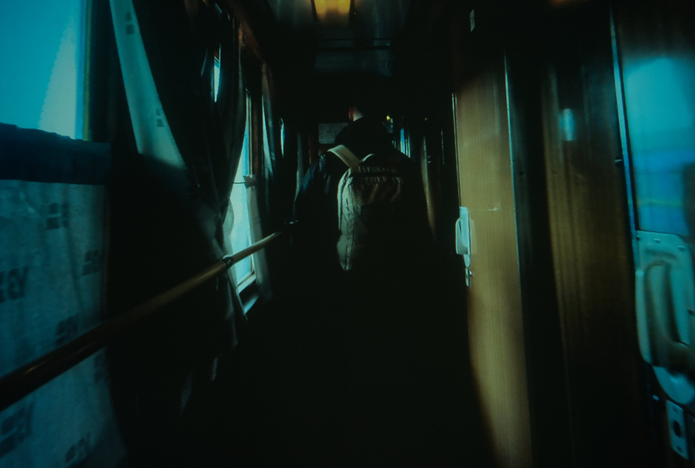
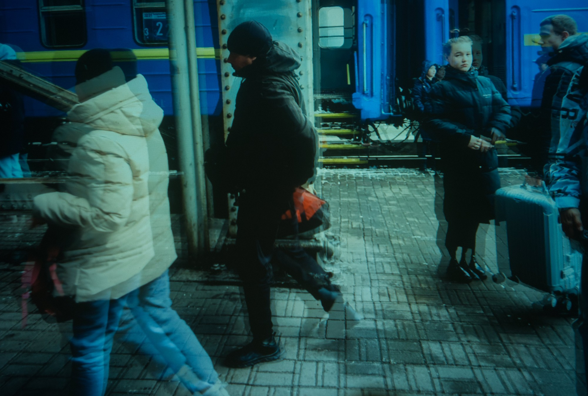
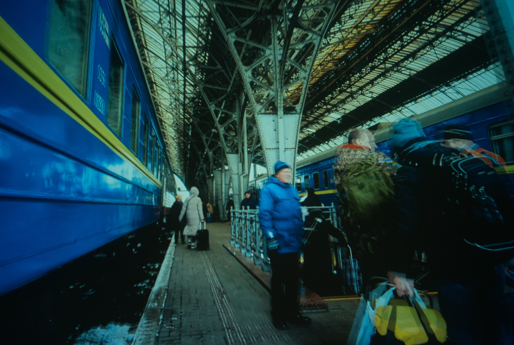
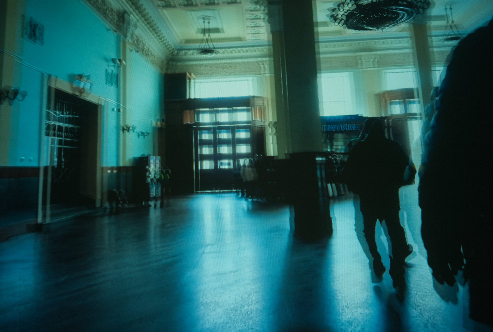
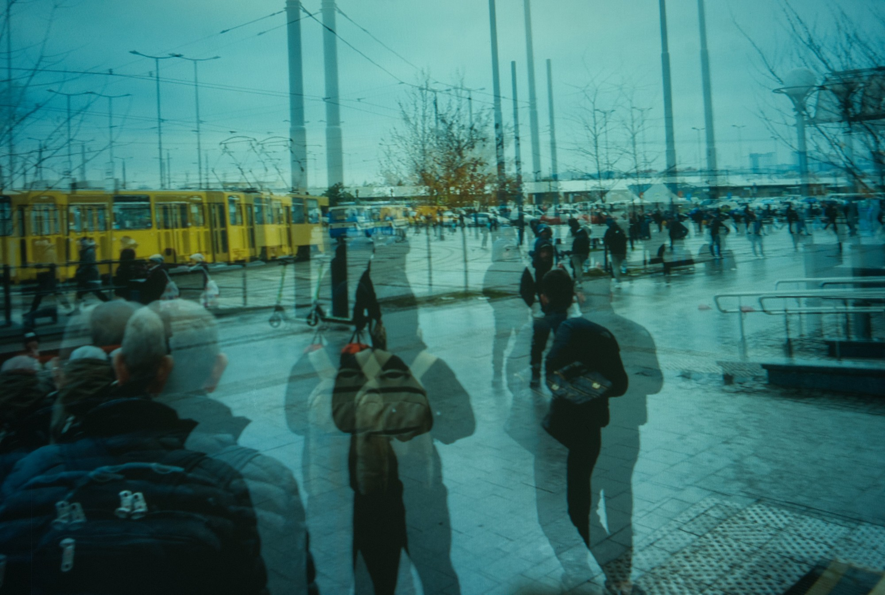
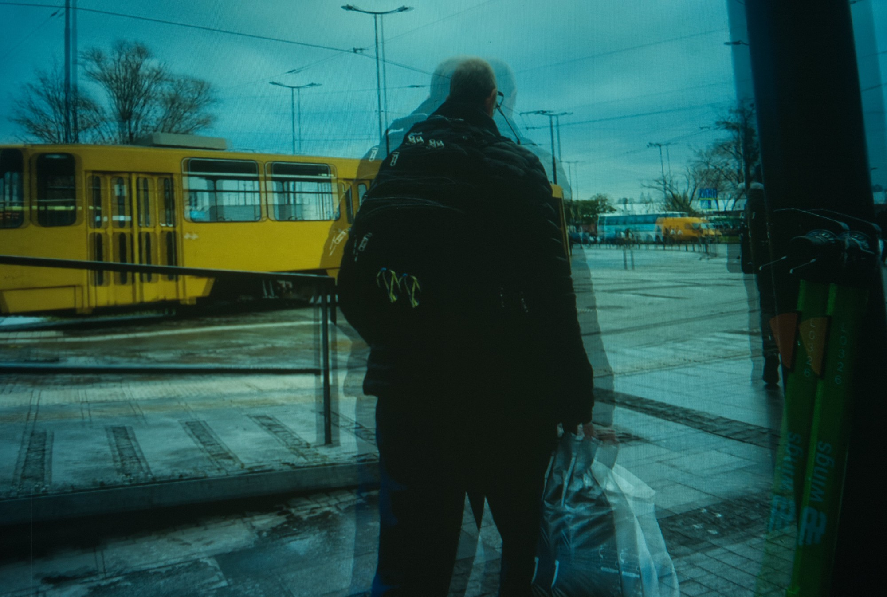
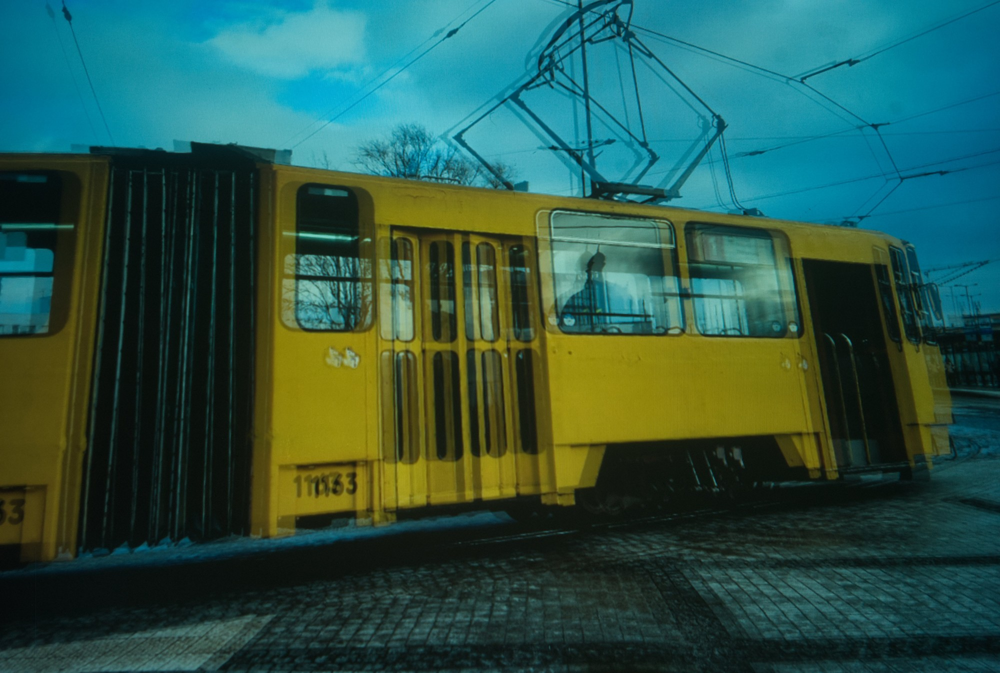
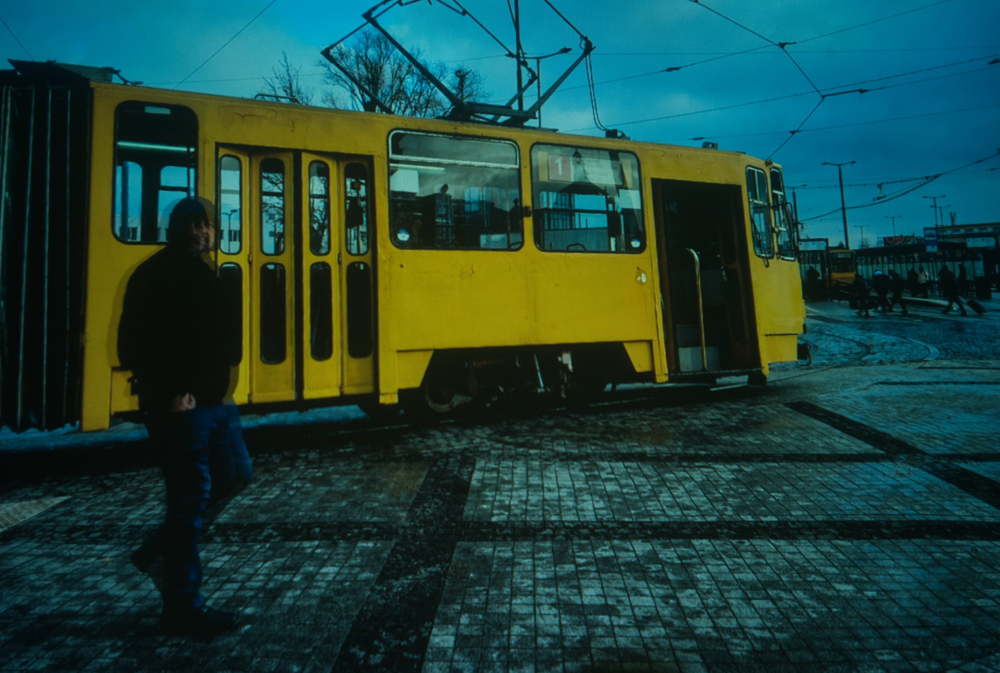
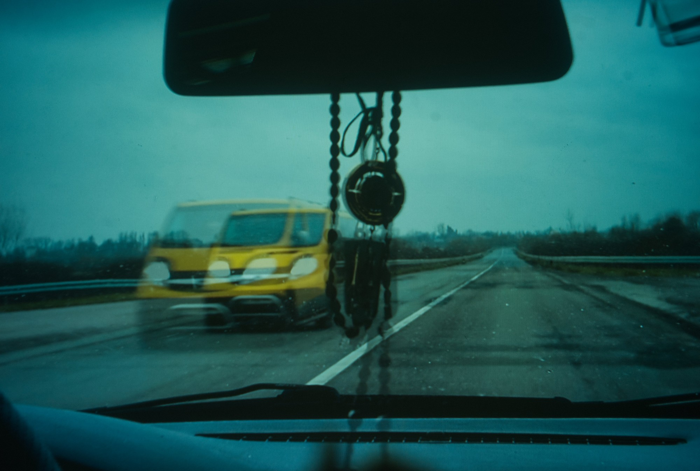
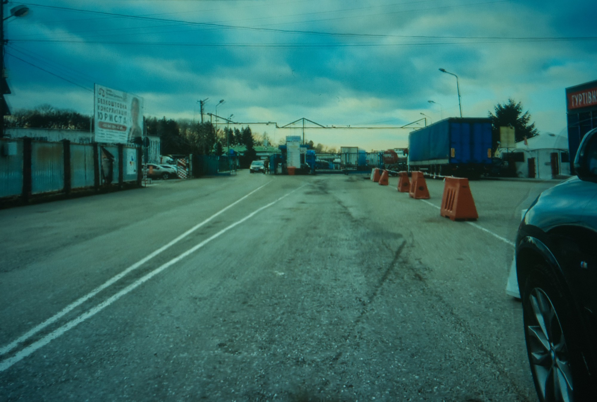
тисяча · case evac · winter 2024
Тисяча means a thousand. On 19 November 2024, the thousandth day of Russia's full-scale invasion of Ukraine, we were on the road, driving a vehicle from Bristol to Kyiv in aid of Driving Ukraine.
The photographs were made from the moving vehicle over five days, days 999 to 1003: 2 592 km, nineteen waypoints and five crossings, the last of them the border between Poland and Ukraine.
scrapbook · 24 spreads
2400 × 1492
1.61 : 1, the proportion of the spread
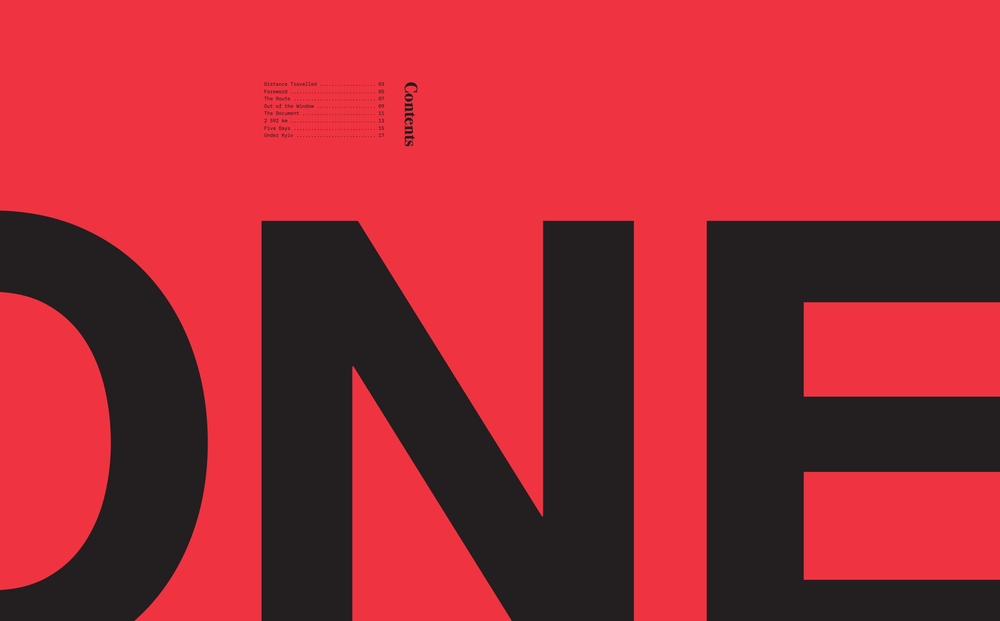
2400 × 1492 px
The opener for part one: ONE in black, too big for the red page and cut off at its edges, with the part’s contents set small above.
7 artefacts
3 groups
one page = 4:5
a · anatomy of distance travelled1000·С002 · листи 1–2


лист 1 · anatomy. The journey as one line along distance from Bristol, cut into strata for route, bearing, segment length, latitude, frames and dispatches. Held at 1 218 km near Berlin on day 1001.
лист 2 · key. Registers of designation, days, legs, waypoints and crossings; line weights, icons and the title block.
open the PDF (2.4 MB)b · stills and loops4:5 · one page each
The road into Dover through the windscreen: direction signs, a footbridge, average-speed signs, chevrons at a roundabout, the sea beyond, a flyover, traffic lights.
A strip of motorway, barrier and sky folded into an isometric corner, moving as the road passes.
A block of the Kyiv metro turning in the dark: a blue-and-yellow carriage on one face, the tiled platform on the other.
c · instagram4:5 · 16 s loops
Cut for Instagram at 4:5. Three loops of sixteen seconds, muted.